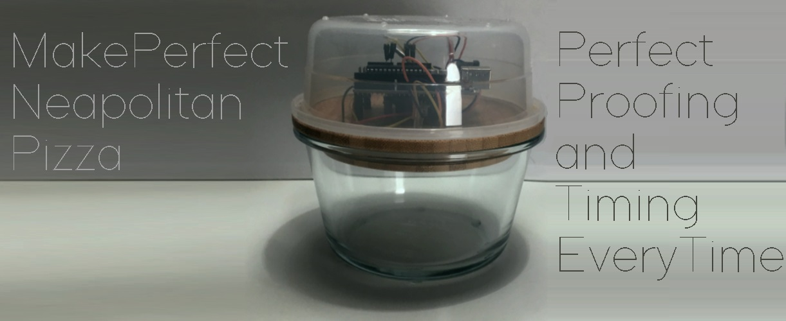

Sebastian Waltilla
Läser till Java-utvecklare på IT-Högskolan och söker praktikplats till augusti 2020. Önskar en praktikplats där jag får lära mig så mycket som möjligt, är intressrad av det mesta, men önskar att det leder fram till någon form av produkt.
Github
Från och med i vår kommer mitt github-konto att explodera, titta in då och då! https://github.com/SebastianWaltilla Hittils har vi gått igenom:


JavaSE
Än så länge bara enkla standalone program: paint-app i javaFX, black Jack spel, arbetar passivt(aktivt) på textbaserat strategispel (som använder MS SQL server), Vi har gått igenom Maven, Junit5 (Jenkins), JavaFX..

Arduino
Enkla småprojekt, bilden över är en pizza-logger. Arduinon läser av höjden på pizzadegen med en GP2Y0A41SK0F ir sensor, som loggar tid, höjd och temperatur. I vår läser vi webservices/spring, skall då skriva en webapp för att se hur degen jäser i realtid.